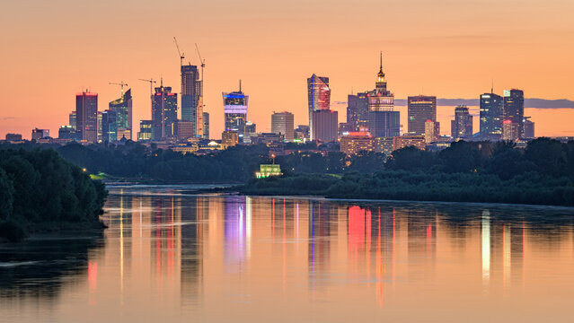
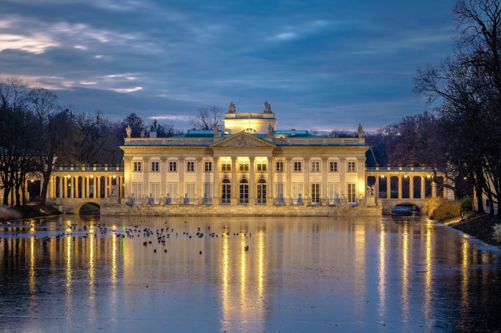
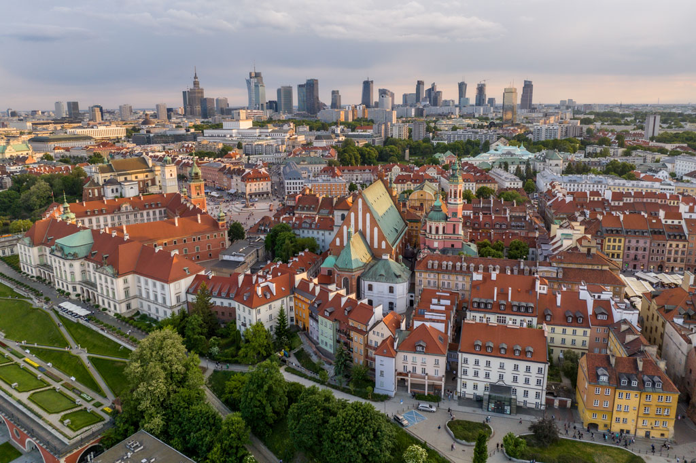

Warszawa
Rzym ::: Warszawa ::: Wiedeń :::

Warszawa to stolica Polski i największe miasto kraju, położone nad rzeką Wisłą. Jest ważnym centrum politycznym, gospodarczym i kulturalnym, gdzie znajduje się siedziba rządu oraz liczne instytucje krajowe i międzynarodowe. Miasto łączy nowoczesność z historią — obok nowoczesnych wieżowców można zobaczyć odbudowane po II wojnie światowej zabytki, takie jak Stare Miasto w Warszawie wpisane na listę UNESCO. Warszawa słynie także z bogatej oferty muzeów, teatrów i wydarzeń kulturalnych.
Łazienki Królewskie

Łazienki Królewskie to jeden z najpiękniejszych zespołów pałacowo-parkowych w Polsce, położony w centrum Warszawy. Powstały w XVIII wieku jako letnia rezydencja króla Stanisław August Poniatowski. Najbardziej charakterystycznym obiektem jest Pałac na Wyspie, otoczony malowniczymi ogrodami i stawami. Łazienki są popularnym miejscem spacerów, a latem odbywają się tu koncerty przy pomniku Fryderyk Chopin.
Stare Miasto

Stare Miasto w Warszawie to najstarsza część stolicy, pełna zabytkowych kamienic, wąskich uliczek i historycznych placów. Zostało niemal całkowicie zniszczone podczas II wojny światowej, a następnie wiernie odbudowane. Centralnym punktem jest Rynek Starego Miasta z kolorowymi kamienicami i pomnikiem Syrenka Warszawska. Dziś to jedno z najważniejszych miejsc turystycznych w Polsce, wpisane na listę światowego dziedzictwa UNESCO.